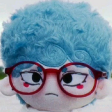

Who is he?
Vector4.new() (also known as bodoEnd90, bodoEnd91, Harlson, ipad baby, etc.) is a Romanian game developer, looking for ways to expand the field of imagination while also managing to sustain itself in the game industry.
He's also an artist, making expressive artworks, with no concern of beauty whatsoever.
What else?
He also makes fun of political events and politics in general, as seen with his satirical media, which often depicts a crude reference to certain individual or group.
He's also a centralist, as he believes both the left and the right winged ideologies should not be separated from one another.